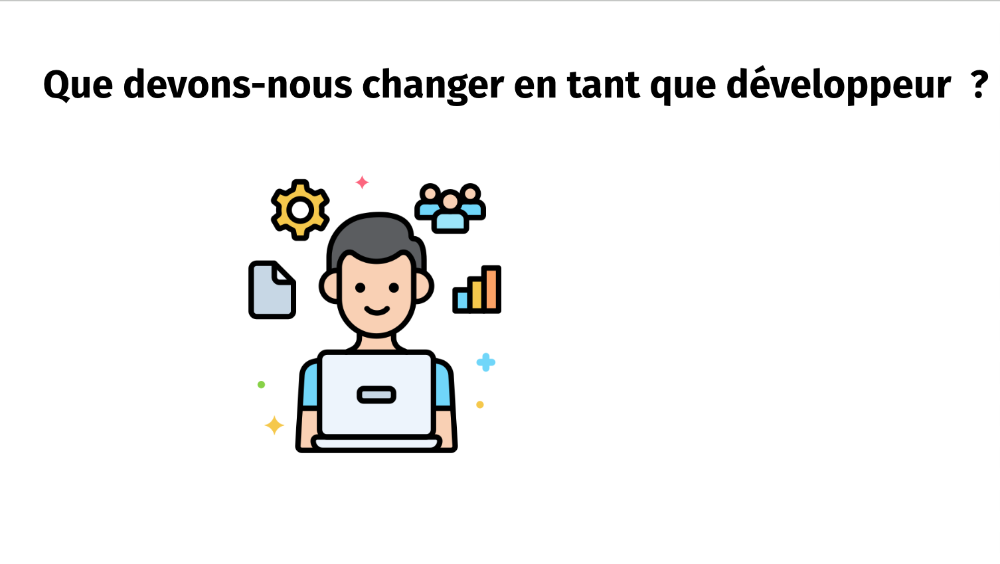
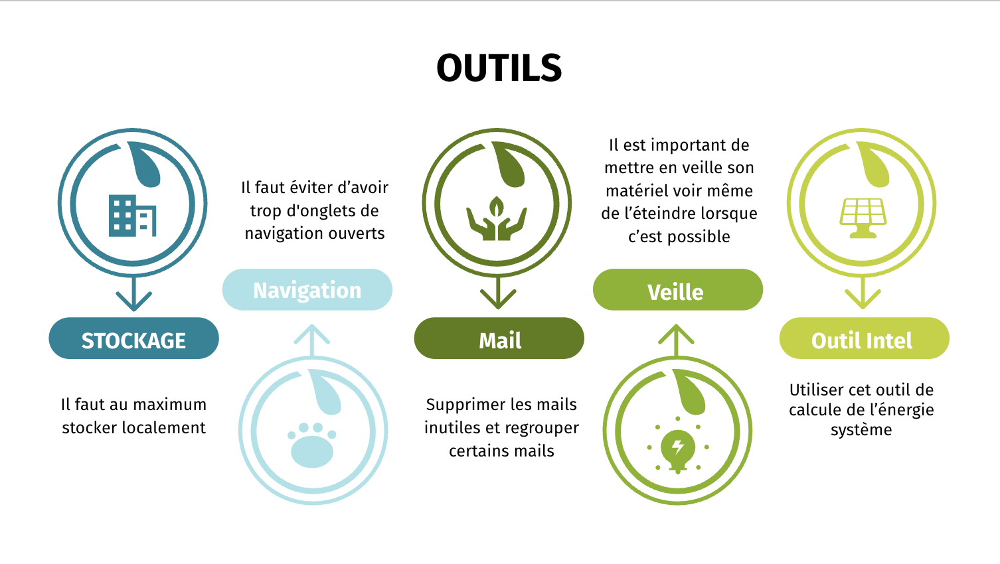
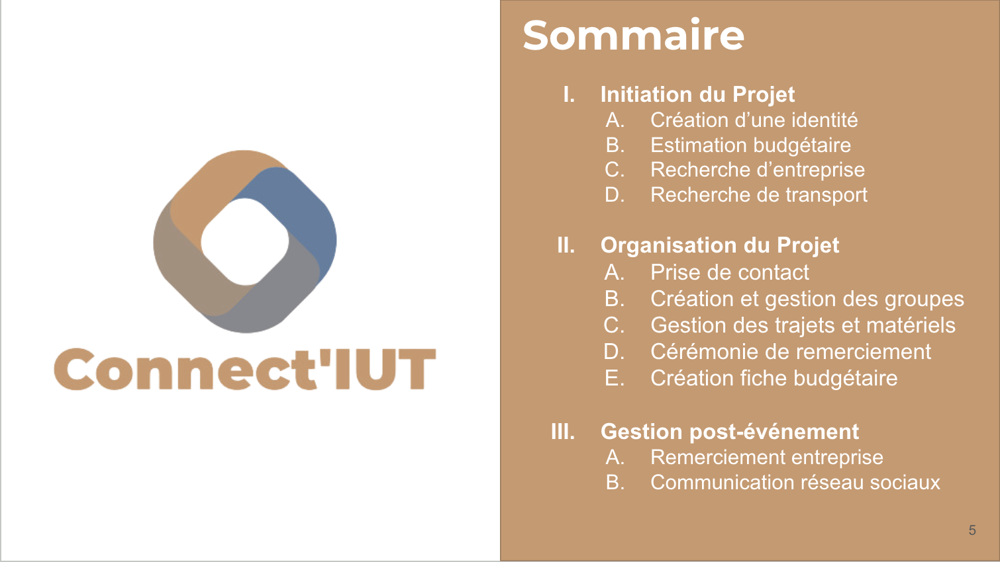
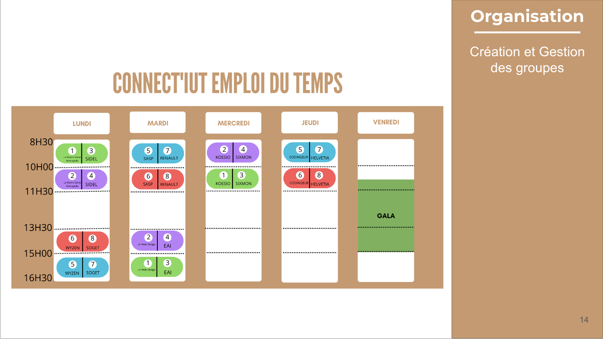

Impact du numérique
Lors d'un oral organisé avec une équipe de six personnes, nous avons engagé une discussion approfondie sur l'impact du numérique sur l'environnement.
Nous avons exploré les différentes facettes de cette problématique complexe, en examinant les conséquences négatives de l'écosystème numérique sur notre planète.
Cette expérience nous a permis de prendre conscience des défis environnementaux associés à l'utilisation croissante des technologies numériques,
mais aussi de découvrir les opportunités pour mettre en place des pratiques plus durables et responsables.
Grâce à ce projet, j'ai développé une vision critique et éclairée de l'écosystème numérique, ce qui me permettra d'adopter des comportements et des décisions plus
conscients dans mon parcours professionnel et personnel.


Connect'IUT
Dans le cadre d'un besoin client, nous avons développé un diaporama dynamique pour présenter l'événement "Connect'IUT".
Cette initiative innovante vise à organiser une visite dans plusieurs entreprises en partenariat avec des groupes d'élèves de l'IUT lors du semestre 3.
Grâce aux informations et aux attentes précises exprimées par notre client, nous avons pu créer un diaporama captivant qui met en valeur les objectifs, les avantages et les opportunités offertes par l'événement.
Ce diaporama offre une présentation visuelle attrayante et informative, soulignant l'importance de la participation des étudiants et suscitant leur intérêt pour cette expérience enrichissante.
En répondant aux besoins spécifiques de notre client, nous avons créé un support de communication efficace pour promouvoir l'événement Connect'IUT et encourager la participation des étudiants.

